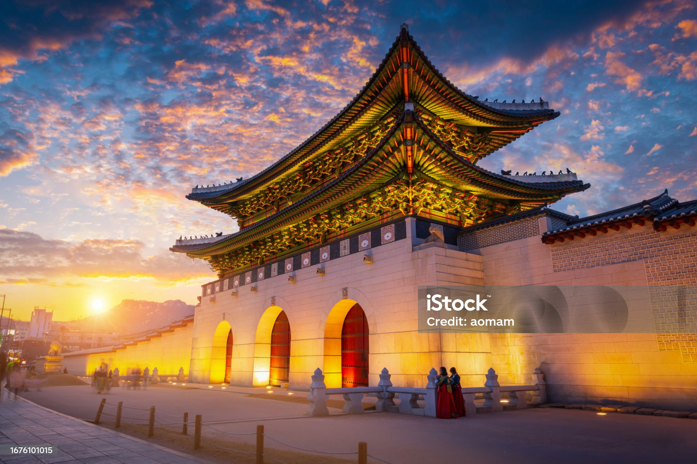

Korea has everything: oceans, mountains, and even caves. You can also visit places that preserve the
legacy of a 500-year dynasty and its historical moments. Want modern culture instead of nature and history?
In Seoul, we can satisfy all of that.
Must-See Spots
Seoul - Hyehwa
Jeju
Dokdo
Busan
Seoul - Jamsil
Visitor Tips
Even if you don’t speak Korean well, trying a little will make people welcome you even more.
Korea has four distinct seasons, so always check the season and weather before you travel.
Most places accept cards, but some still use cash—carry a small amount just in case.
There are many nighttime events and late-night restaurants, so enjoy every hour of your trip.

Gyeongbokgung Palace, one of Korea’s most iconic royal palaces,
represents the beauty of traditional Korean architecture and history.
This travel blog feels like a friendly guide that makes planning simple and exciting.
I found the recommendations super helpful and easy to follow.